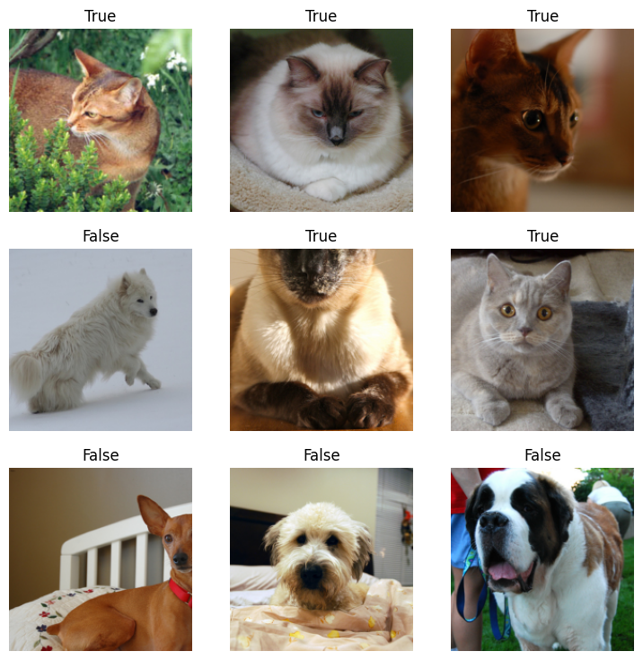
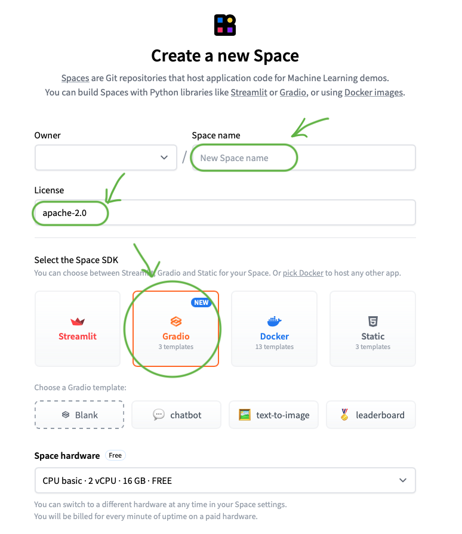

Walkthrough of an end to end dog vs cat image classification model deployed on HuggingFace Spaces, supported by FastAI and Gradio.
It’s been a few weeks that I have started taking the fantastic deep learning course, fast.ai, by Jeremy Howard and it has been an amazing learning journey so far. I come from a STEM background but Howard’s style of teaching deep learning has brought a fresh perspective into learning this field. As I go through each lecture, I made the decision of documenting and sharing my experiences and learning outcomes publicly, so that it could inspire, help or encourage someone along the same path. This course has been a game-changer in my learning path so far, and I’m thrilled to talk about my first project in image classification.
In this very first article, I will guide you through deploying an image classification model using HuggingFace and Gradio. This method is beginner-friendly, straightforward and completely free. Whether you are a newcomer or looking to refine your deployment skills, I’ll walk you through each step, ensuring that by the end, you’ll be able to deploy your own models effortlessly. So, let’s get started on the exciting journey!
Prerequisites
Before we begin, make sure you have the followings:
A basic understanding of Python
A HuggingFace account (sign up here)
Getting Started
First thing, open the Google Colab and let’s make sure we have the necessary tools set up. Since we’re using the popular fastai library, you might need to install or upgrade it first with the following command.
Now, install the one necessary package needed at this step.
Gathering Data
Fastai makes it incredibly easy for us to work with datasets thanks to its built-in function: untar_data(). This function streamlines the process of downloading and extracting datasets.
In our case, we use untar_data(URLs.PETS) to download a compressed dataset of pet images from a specified URL and extract it to a specific location on our local machine (path).
The PETS dataset includes images of 37 breeds of pets along with annotations, which are perfect for training an image classification model.
Loading Data
Next, we need to load our data. ImageDataLoaders.from_name_func is a method we use that is provided by the fastai library. It is designed to help you create a DataLoader for training and validating image classification models. This method is particularly useful when you have a dataset of images and the labels can be inferred from the filenames of those images, which is basically what we have here.
The primary purpose of ImageDataLoaders.from_name_func is to create a data loader that can feed images and their corresponding labels to a machine learning model during training and validation phases. It streamlines the process of preparing data, handling transformations, and ensuring that the data is fed in batches to the model.
But how does it work? Let’s break it down into smaller pieces:
path: The path to your dataset directory.get_image_files(path): A function from fastai that returns a list of all image file paths in the directory.label_func: A function that takes a file path and returns the label. In this example, it selects the label according to the first letter of the file’s name. If the name starts with a capital letter, the image belongs to a cat, and a dog otherwise.item_tfms: Transformations applied to each image individually, such as resizing.
dls = ImageDataLoaders.from_name_func('.',
get_image_files(path), valid_pct=0.2, seed=42,
label_func=is_cat,
item_tfms=Resize(192))
def is_cat(x): return x[0].isupper() Let’s take a look at some randomly picked photos from our dataset.

Training the Model
After setting up the DataLoader, the next step is to create and train a model using the fastai library. Here’s how you can do it:
First, we initialize a vision_learner with our data loaders (dls), specifying the architecture we want to use—in this case, ResNet-152, a powerful and accurate convolutional neural network. We also specify the metrics we want to monitor during training, such as the error rate.
Next, we fine-tune the model using the fine_tune method:
This method fine-tunes the model for a specified number of epochs—in this case, 3 epochs. Fine-tuning involves training the model’s top layers, which are typically initialized with random weights, while gradually unfreezing and training the deeper layers of the pre-trained network. This process allows the model to adapt to our specific dataset while leveraging the powerful features learned by ResNet-152 on a much larger dataset.
| epoch | train_loss | valid_loss | error_rate | time |
|---|---|---|---|---|
| 0 | 0.051338 | 0.039052 | 0.010825 | 01:58 |
| 1 | 0.026246 | 0.006559 | 0.002030 | 01:58 |
| 2 | 0.010546 | 0.004937 | 0.001353 | 01:57 |
Downloading the Model
Let’s go ahead and download our model.
Deployment
For the deployment, it’s very straightforward. We will be using HuggingFace Spaces. It is a platform that allows you to host and share machine learning models and demos easily.
Before going onto HuggingFace, we need to create our app.py and requirements.txt files so that we can upload them to the HF repo.
In the app.py file, we load the model that we saved previously, using load_learner('model.pkl'), and then classify our new unseen images using the Gradio interface. Gradio is a Python library that allows you to quickly create customizable web apps for your machine learning models and data processing pipelines.
What we are basically doing here is setting up a web interface where users can upload images, and our model will classify these images and return the results. We call our classify_image function, specify our inputs and outputs, and optionally include some example images for users to test.
from fastai.vision.all import *
import gradio as gr
def is_cat(x): return x[0].isupper()
learn = load_learner('model.pkl')
categories = ('Dog', 'Cat')
def classify_image(img):
pred,idx,probs = learn.predict(img)
return dict(zip(categories, map(float,probs)))
image = gr.Image()
label = gr.Label()
examples = ['dog.jpg', 'cat.jpg', 'cat_dog.jpg']
intf = gr.Interface(fn=classify_image, inputs=image, outputs=label, examples=examples)
intf.launch(inline=False)We need to create a requirements.txt file as mentioned before, and all we need to mention is the fastai library because HF doesn’t automatically include it. This file ensures that the necessary dependencies are installed when the app is deployed on HuggingFace Spaces.
Setting up HuggingFace Spaces
So how do you set up the HF Space? First, go to the HuggingFace Spaces website. Once you’re there, click on “Create new Space”.
Choose a Space name of your own. For the License, choose “apache-2.0”. Select Gradio as the Space SDK. Leave the rest as is and click on “Create Space”.

Open your local terminal and navigate to the directory where your required files, that you created previously, are saved. Once there, do the following:
Have your three files ready:
app.py
requirements.txt
model.pkl
You can commit and push the first two files as follow:
However, to upload your model, you need a different approach since it’s a large file (over 25 MB). You need to first. Follow these steps:
Install Git: If you do not have Git installed locally, please download from here.
Download and install Git Large File Storage (LFS): Git LFS is an extension for Git that allows you to handle large files. Download and install it from here.
Set up Git LFS: Type the following commands in your terminal:
Add and commit your model file:
Push your changes to the repository:
Final Result
After following all these steps, your app will show up on the screen in a few moments! You’ll see your HuggingFace Space with your deployed image classification model, ready to use and share with others!

Thanks for sticking with me up to this point! I hope you found this guide useful. Feel free to check out my app and all the source code by clicking here. Happy coding, and keep pushing boundaries!